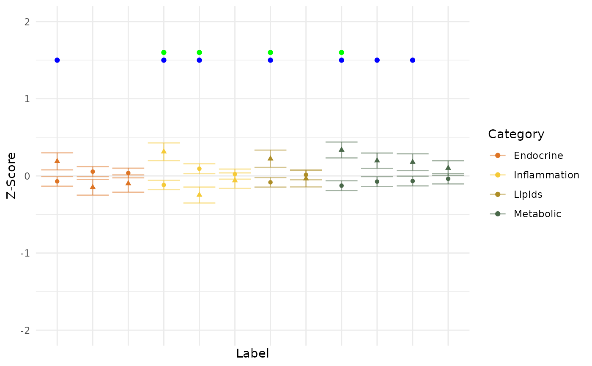

Plot Z-score group differences with statistical significance
Source:R/CreateZScorePlot.R
PlotZScore.RdThis function generates a Z-score plot to compare multiple variables across different groups. It offers options for parametric or non-parametric tests, ordinal treatment, and custom labeling. Significant p-values and FDR-adjusted p-values are highlighted on the plot.
CreateZScorePlot() has been superseded by PlotZScore().
It remains available as a backwards-compatible alias and returns the same
scientific visualization.
Usage
PlotZScore(
data,
TargetVar,
variables,
VariableCategories = NULL,
Relabel = TRUE,
sort = TRUE,
RemoveXAxisLabels = TRUE,
Ordinal = lifecycle::deprecated(),
TreatOrdinalAs = "Continuous",
Parametric = TRUE,
SigP_YCoord = 1.5,
SigFDR_YCoord = 1.6,
Data = lifecycle::deprecated(),
Variables = lifecycle::deprecated()
)
CreateZScorePlot(...)Arguments
- data
A dataframe containing the data to be analyzed.
- TargetVar
A string specifying the column name of the grouping variable.
- variables
A vector of strings specifying the column names of the variables to be analyzed.
- VariableCategories
An optional vector categorizing the variables.
- Relabel
Logical; if TRUE, variables will be relabeled using their labels from the dataframe.
- sort
Logical; if TRUE, variables will be sorted by category and p-value.
- RemoveXAxisLabels
Logical; if TRUE, X-axis labels will be removed.
- Ordinal
Deprecated (since 20.20.0). Use
TreatOrdinalAsinstead.- TreatOrdinalAs
How ordinal variables are handled. This numeric plot accepts
"Continuous"or"Exclude".- Parametric
Logical; if TRUE, parametric tests (t-test/ANOVA) will be used; otherwise, non-parametric tests (Wilcoxon/Kruskal-Wallis) will be used.
- SigP_YCoord
Numeric; the y-coordinate for marking significant p-values.
- SigFDR_YCoord
Numeric; the y-coordinate for marking significant FDR-adjusted p-values.
- Data
Deprecated (since 19.15.0). Use
datainstead.- Variables
Deprecated (since 19.15.0). Use
variablesinstead.
Examples
data(SampleData)
data(SampleVariableTypes)
# Attach labels and factor levels for readable axis labels
Labelled <- RevalueData(SampleData, SampleVariableTypes)$RevaluedData
# Many variables, grouped into categories
vars <- c("AXL", "Adiponectin", "Alpha_1_Antitrypsin", "Alpha_2_Macroglobulin",
"Apolipoprotein_A1", "Apolipoprotein_B", "C_Reactive_Protein",
"Cortisol", "Cystatin_C", "Ferritin", "Insulin", "Leptin")
cats <- c(rep("Metabolic", 4), rep("Lipids", 2),
rep("Inflammation", 3), rep("Endocrine", 3))
p <- PlotZScore(
Labelled,
TargetVar = "Diagnosis",
variables = vars,
VariableCategories = cats
)
p
#> Warning: Removed 5 rows containing missing values or values outside the scale range
#> (`geom_point()`).
#> Warning: Removed 8 rows containing missing values or values outside the scale range
#> (`geom_point()`).

# An interactive version via plotly
if (requireNamespace("plotly", quietly = TRUE)) {
plotly::ggplotly(p)
}